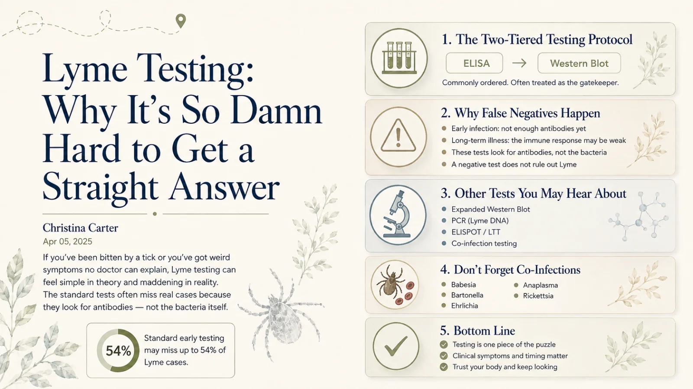

The Best Lyme Disease Tests — and Why the Standard One Misses So Many People
If a "normal" Lyme test told you that you were fine while you kept getting sicker, you are not imagining things. Here's why standard testing fails so often, what the newer tests actually do, and the specialty labs — led by ArminLabs — that Lyme-literate doctors trust most.

For ten years, tests told me I was fine. I was not fine. If you know that particular heartbreak — handed a "negative" while your body falls apart — then this is the page I wish someone had given you years ago.
Testing for Lyme is genuinely hard, and the standard test most doctors order misses a lot of people. The good news: testing has come a long way, and there are newer, more sensitive options. Let me walk you through what's real, what's new, and which labs the Lyme-literate world actually relies on.
Key Takeaways
- A “normal” test doesn’t mean you’re fine. Standard testing fails often, especially early or in chronic Lyme.
- It looks for antibodies, not the bacteria — so timing and immune suppression cause false negatives.
- There are three kinds of tests: antibody, direct-detection, and T-cell — understanding this unlocks everything.
- Specialty labs like ArminLabs, IGeneX, and Galaxy are what Lyme-literate doctors trust.
- Tests support a diagnosis — they don’t replace one. Lyme is ultimately clinical.
Why the standard test misses Lyme
First, some perspective: Lyme is not rare. It's the most common vector-borne disease in the U.S. — about 476,000 people are diagnosed and treated every year, according to the CDC.1 The problem was never that the disease is exotic. The problem is that the standard tests are unreliable.
In the U.S., standard testing is a two-tier process: an ELISA screen, and if that's positive, a Western blot. Both look for antibodies — your immune system's response — not the bacteria itself. That design has real blind spots:
- Antibodies take time. Early on, you may not have produced enough to register — so a test soon after a bite can be falsely negative.
- Early antibiotics can blunt the response. Treatment can suppress antibody development, hiding an infection that's still there.
- Strains vary. Standard panels often don't account for the divergent Borrelia strains some people actually carry.
- Antibodies linger or fade confusingly. They can persist for years after the fact, or drop, making it hard to tell past from present.
The takeaway that took me a decade to learn: a negative standard test does not rule out Lyme. If your story fits, keep going.
The numbers back this up. One analysis found the standard ELISA may miss up to 54% of Lyme cases in early infection,4 and the International Lyme and Associated Diseases Society (ILADS) notes that CDC-approved testing methods can miss over half of actual cases.3 The Western blot can also be overly conservative — rejecting real cases when not enough "bands" show up, even though Lyme is a shapeshifter that doesn't always trigger every expected response.
“But my test was negative”
I hear this one constantly, and it's honestly heartbreaking. People rule out Lyme because their ELISA came back negative, then spend months or years chasing phantom diagnoses — fibromyalgia, chronic fatigue, anxiety, MS, you name it.
Here's what most people don't know: the tests don't look for the bacteria. They look for your body's response — and that response varies wildly. If you're in the early stages, your immune system may not have made enough antibodies yet. If you've had Lyme a long time, your immune system may be too beaten down to make them at all. So if you're being gaslit — by the system, or even by your own brain — because "the test said no," hear me: you're not crazy. You're navigating a broken system.
This is exactly how Lyme earns its nickname, "the great imitator" — people get labeled with fibromyalgia, MS, lupus, and more while the real infection goes unfound.
The three kinds of tests — this is the part to understand
Once you grasp these three categories, the whole confusing landscape suddenly makes sense:
- Antibody (indirect) tests. Look for your immune response to Borrelia. The specialty versions use expanded strains and criteria to catch more than the standard two-tier does.
- Direct-detection tests. Look for the organism itself — its DNA or antigens — via PCR, antigen capture, or culture methods. A positive is strong evidence of active infection.
- T-cell (cellular immunity) tests. Like the EliSpot, these measure whether your T-cells are actively reacting to Borrelia right now — useful for telling active infection from old exposure, and for tracking treatment.
Antibody tests ask "have you ever met this bug?" Direct and T-cell tests ask "is it active in you now?" That difference is everything when you've been sick for years.
The labs Lyme-literate doctors trust
These are the specialty labs that come up again and again in the Lyme-literate community. None is perfect, and the "best" one depends on your situation — but this is where serious testing usually happens.
ArminLabs
Often the top pickAugsburg, Germany · ships kits worldwideFounded by Dr. Armin Schwarzbach after he saw how insensitive standard Lyme testing was, ArminLabs is a favorite of Lyme-literate doctors around the world — and the lab I hear recommended most.
- EliSpot — a T-cell test reflecting active Borrelia activity; the lab reports it can help monitor treatment and typically turns negative several weeks after effective therapy.
- TickPlex / TickPlex Plus — antibody testing that includes an antigen for persister ("round body") forms and screens multiple co-infections from one sample.
- CD57 natural killer cells — used to help gauge the chronic immune picture.
IGeneX
Established U.S. leaderCalifornia, USAOne of the best-known specialty labs, IGeneX tests for more strains than standard panels and is known for its ImmunoBlots. Notably, its Lyme IgM and IgG ImmunoBlots received FDA clearance in 2025 — a meaningful step toward mainstream credibility. (Heads-up: due to new EU regulations, IGeneX stopped accepting EU orders as of June 2026.)
Galaxy Diagnostics
Direct detectionNorth Carolina, USAGalaxy specializes in finding the organism itself. It's behind the Nanotrap® Urine Antigen Test for Lyme Borrelia, advanced PCR (ddPCR), and culture-enrichment methods — and a newer combined "BBB Direct Detect" aiming to catch Borrelia, Babesia, and Bartonella together. A strong option when the goal is evidence of active infection, and well-regarded for co-infections like Bartonella.
TLab & others
Emerging / specializedUSATLab (from Dr. Robert Mozayeni) uses advanced microscopic imaging and RNA FISH testing for Borrelia, Bartonella, and Babesia. You'll also hear about Vibrant Wellness (broad tick-borne panels) and DNA Connexions (urine PCR). Opinions among Lyme doctors vary on each — another reason to choose with an expert rather than alone.
What's genuinely new in testing
If you searched because you heard there's a "new Lyme test," here's what's actually moved recently:
- IGeneX ImmunoBlots earned FDA clearance (2025) — bringing specialty-grade antibody testing closer to the mainstream.
- Direct-detection is maturing — Galaxy's Nanotrap antigen test and combined direct-detection panels aim to show active infection, not just past exposure.
- Cellular (T-cell) testing keeps gaining ground — EliSpot-style assays are increasingly used to assess current activity and treatment response.
Honest cautions
I'd be doing you a disservice to oversell any of this. Specialty testing is more sensitive, but that can cut both ways — some of these labs draw criticism over false positives, and mainstream medicine still debates them. No test is a crystal ball. The most important principle in all of Lyme: test results support a diagnosis; they don't replace one. A skilled, Lyme-literate clinician weighs your history, symptoms, exposure, and labs together.
How to advocate for yourself (without losing your mind)
The best advice I can give you, hard-won:
- Know your timeline. When were you bitten? When did symptoms start? This helps a doctor interpret results.
- Track your symptoms — especially the weird ones: floating anxiety, migrating pain, light sensitivity.
- Find a Lyme-literate doctor (LLMD). They're not perfect, but they won't gaslight you or toss you an antidepressant and a pat on the head.
- Be ready to pay out of pocket. Many of the best tests and practitioners aren't covered by insurance.
- Don't stop at a negative test. If your body is screaming that something's wrong, trust yourself and keep looking.
And don't forget the co-infections — Babesia, Bartonella, Ehrlichia, Anaplasma, Rickettsia. Their symptoms overlap with Lyme and complicate the picture; if you only test for Lyme, you can miss the whole constellation a tick can drop into your bloodstream.
Questions to ask
- Given my history, should we be looking for antibodies, the organism directly, or active T-cell response — or a combination?
- Which co-infections should we test for at the same time?
- Could timing or past antibiotics be affecting my results?
- How will we interpret a "negative" if my symptoms still fit?
- Which lab makes the most sense for my situation and location?
If you're staring at a confusing result — or a negative that doesn't match how you feel — I can help you think through next steps and find a Lyme-literate doctor who orders the right tests.
Lyme Testing FAQ
It uses a two-tier antibody approach (ELISA then Western blot). Antibodies take weeks to form, can be suppressed by early antibiotics, may fade or linger confusingly, and standard panels often miss divergent strains. A negative standard test does not rule out Lyme — diagnosis should be clinical, supported by testing.
A T-cell test from ArminLabs in Germany that measures your immune system's active response to Borrelia — useful for indicating active infection and tracking treatment, as it typically turns negative weeks after effective therapy. The lab reports an estimated sensitivity around 84% with high specificity. No test is perfect; interpret results with a Lyme-literate clinician.
A direct-detection urine antigen test offered through Galaxy Diagnostics that looks for Borrelia antigen rather than antibodies — aiming to indicate active infection. It's one of several newer direct-detection technologies alongside advanced PCR and culture methods.
There's no single best for everyone. Lyme-literate doctors commonly use ArminLabs, IGeneX, Galaxy Diagnostics, and TLab, choosing based on whether the goal is antibodies, direct detection, or active T-cell response — plus which co-infections are suspected. Choose with a Lyme-literate clinician; no test replaces clinical judgment.
References
- Centers for Disease Control and Prevention (CDC). “Lyme Disease Data and Surveillance.” cdc.gov
- Cook MJ, Puri BK. “Commercial test kits for detection of Lyme borreliosis: a meta-analysis of test accuracy.” Int J Gen Med. 2016;9:427–440.
- International Lyme and Associated Diseases Society (ILADS). “Evidence-based guidelines for the management of Lyme disease.” ilads.org
- Stricker RB, Johnson L. “Lyme disease diagnosis and treatment: lessons from the AIDS epidemic.” Minerva Med. 2010;101(6):419–425.
Medical disclaimer: This article is for educational purposes only and reflects personal experience and general research. It is not medical advice, diagnosis, or treatment, and it does not replace consultation with a qualified healthcare professional. Lab names are mentioned for information only and are not endorsements or affiliations; test availability, performance, and regulatory status change over time — verify current details directly with each laboratory and your physician. No laboratory test is perfectly accurate, and Lyme disease is ultimately a clinical diagnosis. Christina Carter is a patient advocate and educator, not a licensed medical provider. Always consult a qualified, Lyme-literate physician about testing and treatment.